Table of Contents
Table of Contents  Previous Section
Previous Section
Relationships
Your employee database might have, in addition to the Employee entity, a JobTitle entity that identifies the various job titles that an employee can have and whether each title represents a salaried or an hourly position. A relationship between the Employee entity and the JobTitle entity expresses the affinity between employees and titles, and allows you to access the title information for a given employee. Graphically, a relationship can be shown as a named arrow that points from one entity (the source entity) to another (the destination entity); the Employee-JobTitle relationship (which is named toJobTitle) is depicted in Figure 57.
Note: To support the toJobTitle relationship, the Employee entity has been altered-the titleID attribute has been added to it. This is explained in the section "Relationship Keys".
The table that's represented by the source entity is referred to as the source table; the source table contains source records. Similarly, the table that's represented by the destination entity is referred to as the destination table; it contains destination records.
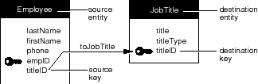
Figure 57. The toJobTitle Relationship
Relationship Directionality
Relationships are unidirectional. In a unidirectional relationship, the path that leads from the source to the destination can't be traveled in the opposite direction-you can't use a relationship to go from the destination to the source. For example, although you can use the toJobTitle relationship to find the title for a particular employee, you can't use it to get a list of the employees that share a particular title.
Naming Relationships
Most of the relationships described in this manual use a simple naming convention: relationships are named after the destination entity. For example, a Movie entity can have a studio relationship to a Studio entity, and a roles relationship to a MovieRoles entity. Note that singular names are typically used for to-one relationships, and plural names are used for to-many relationships. However, you're not bound by this convention-EOModeler lets you give relationships any names you like.
Relationships and the Data Dictionary
Unlike entities and attributes, relationships don't correspond to names in the server's data dictionary. In general, most servers don't define structural elements for relationships, so their data dictionaries don't contain names to which E-R relationships can correspond. But relationships aren't completely disassociated from the data dictionary: A relationship's definition, as explained in the next section, depends on the existence of particular entities and attributes (which, as described earlier, must correspond to data dictionary names). Relationship Keys
The construction of a relationship involves more than just two entities. You also have to designate at least one attribute from each entity as a relationship key. In the toJobTitle relationship, for instance, the Employee.titleID and JobTitle.titleID are so designated; this is indicated in Figure 57 as the two attributes that lie at either end of the relationship arrow. Just as the tables are called source and destination tables, so are the relationship keys named. In the source entity, the relationship key is called the source key. The destination entity's relationship key is called the destination key.
Note: As in the case of the toJobTitle relationship, the source and destination keys often have the same name, although this isn't a requirement of model design.
An Example with Data
To further illustrate how a relationship is resolved, consider the "EMPLOYEE" and "JOB_TITLE" tables presented in Figure 58 (for the purpose of this example, only the essential columns are shown).
Here we see that the value for the titleID attribute for James Winton is 1. Looking in the "JOB_TITLE" table, we see that 1 is the ID of the President. Thus, James Winton is the company president. Similarly, we can determine that Kai Veasey is a manager.
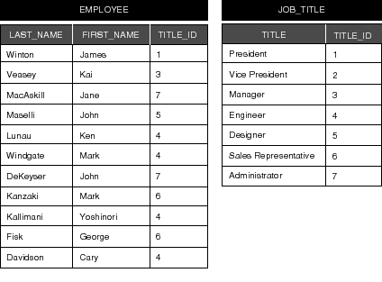
Figure 58. The "EMPLOYEE" and "JOB_TITLE" Tables
Choosing Relationship Keys
Any attribute can be used as a relationship key, but some are better suited than others. In general, of the two relationship keys for a particular relationship, the destination key will be a primary key for its entity (or, otherwise, an attribute that characterizes unique data) and the source key is manufactured to emulate the destination key. In traditional E-R modeling, the emulating attribute is called a foreign key. The toJobTitle relationship demonstrates this: The destination key in the JobTitle entity is titleID, the primary key for that entity. The titleID attribute is added to Employee as foreign key. Compound Relationship Keys
A relationship's keys needn't be single attributes from the related entities; any number of attributes can be paired as relationship keys within the same relationship to form a compound relationship key. A relationship that designates more than one pair of keys is called a compound relationship.
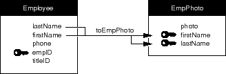
Figure 59. A Compound Relationship
(non-compound) relationship. Joins
Relationships are made up of source-destination key pairs. A join is the pairing of one source attribute and one destination attribute for purposes of establishing a relationship. Thus, simple relationships consist of one join. Compound relationships are composed of two or more joins. In Figure 59, for example, the toEmpPhoto relationship is composed of two joins: one linking Employee.lastName to EmpPhoto.lastName, and one linking Employee.firstName to EmpPhoto.firstName.
Notice that the relationship keys for the toEmployee relationship are the same as for toJobTitle. However, the source and destination key assignments are reversed. In other words, whereas Employee.titleID is the source key for the toJobTitle relationship, it's the destination key for toEmployee; similarly, JobTitle.titleID changes destination and source key roles between the two relationships.
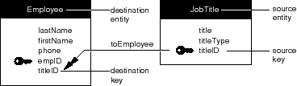
Figure 60. A To-Many Relationship
Consider, for example, the actual relationship between employees and projects. A project can involve many employees, and a single employee can contribute to more than one project.
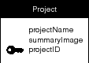
Figure 61. The Project Entity
Forming a to-many relationship between Employee and Project (toProject) and a to-many relationship between Project and Employee (toEmployee) doesn't work, because it's impossible to assign relationship keys that would support this set-up. For example, in the toProject relationship you can't use the empID attribute as a source key because the destination key, Project.empID (added as a foreign key), wouldn't be atomic (since a project may consist of more than one employee). Importing projectID as a foreign key into Employee has the same problem: The attribute wouldn't be atomic (since an employee may be involved with more than one project).
The most common way to establish this "many-to-many" relationship (as it's called in traditional E-R modeling) is to insert an auxiliary entity between Employee and Project, and form a network of relationships to and from it. This is depicted in Figure 62.
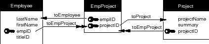
Figure 62. A Many-to-Many Relationship
The Tables Behind the Many-to-Many Model
To better understand how the many-to-many model works, it helps to see an example of the tables that store the data. Sample "EMPLOYEE" and "PROJECT" tables that are filled with this information are shown in Figure 63 (for clarity, only relevant attributes are shown).
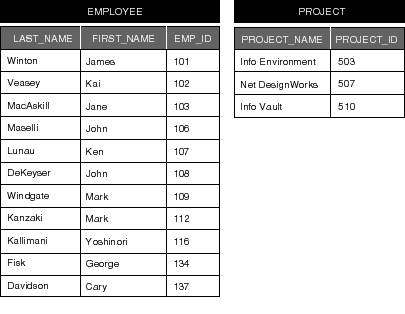
Figure 63. "EMPLOYEE" and "PROJECT" Tables
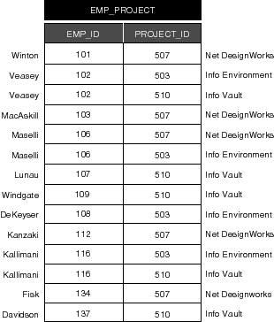
Figure 64. The "EMP_PROJECT" Table
Reflexive Relationships
The source and destination entities in a relationship needn't be different. Where the entities in a relationship are the same, a reflexive relationship is created. Reflexive relationships are important in characterizing a system in which an instance of an entity points to another instance of the same entity.
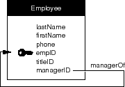
Figure 65. A Reflexive Relationship
Flattened Attributes
At the beginning of this chapter, it was stated that an entity maps to a table in the database. This is not strictly true, however, because the Enterprise Objects Framework allows you to add flattened attributes (and flattened relationships) to your entity, effectively extending the entity's mapping to more than one table in a database.
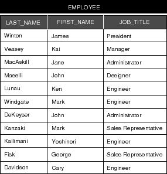
Figure 66. A View of the "EMPLOYEE" Table After Adding a Flattened Attribute
Flattened Relationships
Just as you can flatten an attribute to add it to another entity, so can you flatten a relationship. This gives a source entity access to relationships that a destination entity has with other entities. It is equivalent to performing a multi-table join.
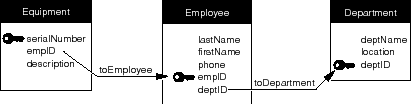
Figure 67. Equipment Allocated by Department
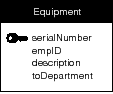
Figure 68. A Flattened Relationship